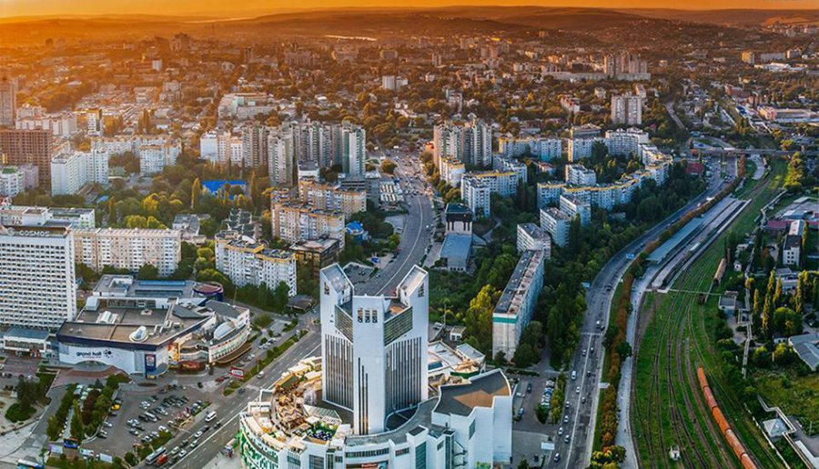

Моя Батьківщина — Молдова

Кишинів
Столиця Молдови, розташована в центрі країни. Відома як "місто-сад" завдяки численним паркам та алеям. Тут знаходяться Палац Республіки, Тріумфальна арка та Собор Різдва Христового.

Стара Орхей
Історико-археологічний комплекс на березі річки Реут. Тут розташовані печерні монастирі, залишки давніх фортець та мальовничі краєвиди. Це одне з найпопулярніших туристичних місць Молдови.

Кепріанський монастир
Один із найстаріших монастирів Молдови, заснований у XV столітті. Є важливим духовним та культурним центром країни. Розташований серед мальовничого лісу.

Сорокська фортеця
Унікальна фортеця у формі ідеального кола, збудована у XV столітті. Розташована на березі Дністра. Добре збереглася до наших днів і є символом міста Сороки.

Природа Орхею
Мальовничі краєвиди Старої Орхей вражають своєю красою. Скелясті береги річки Реут, зелені пагорби та історичні пам'ятки створюють неповторну атмосферу.

Бендерська фортеця
Фортеця, збудована у XVI столітті на березі Дністра. Добре збережена, вражає своєю міццю та архітектурою. Важлива історична пам'ятка Молдови.
Цікаві факти про Молдову:
Соняшник є одним із символів країни — Молдова є великим виробником соняшникової олії.
Молдова має одну з найбільших колекцій народних костюмів у Європі.
Щороку в Молдові проходить фестиваль національної культури "Limba Noastră".
Кишинів вважається одним із найзеленіших міст Європи.
Молдовська народна музика та танець "Жок" відомі далеко за межами країни.
🇲🇩 Ласкаво просимо до Молдови — країни з багатою культурою та гостинними людьми! 🇲🇩